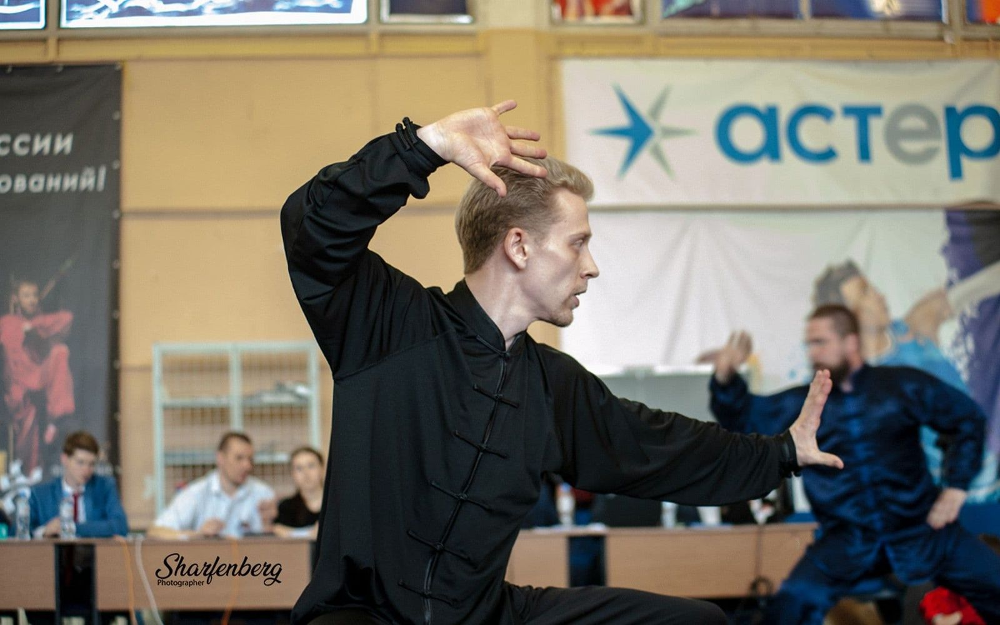

Кунг-фу · Ушу · Туйшоу
Вадим Лава
Тренер по кунг-фу и ушу. Чемпион Мира по кунг-фу, 4-кратный Чемпион Федерации Кунг-Фу России, МСМК. Руководитель Академии Китайских Боевых Искусств (АКБИ) и соорганизатор турнира «Кайши».
- 4×Чемпион Федерации Кунг-Фу России
- МСМКФедерации кунг-фу России
- 20 000+часов тренерской работы

Скоро